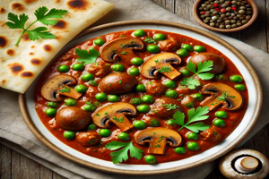

Mushroom Matar Recipe

Ingredients
- 1 cup mushrooms, sliced
- 1/2 cup peas
- 1 tablespoon oil
- 1/2 onion, chopped
- 1 tomato, chopped
- 1/2 teaspoon ginger-garlic paste
- 1/2 teaspoon garam masala
- 1/4 teaspoon turmeric powder
- Salt to taste
Steps to Prepare
- Heat oil in a pan and sauté onions and ginger-garlic paste until golden.
- Add tomatoes, turmeric, and garam masala. Cook until soft.
- Add mushrooms and peas, cook until the mushrooms are tender.
- Adjust seasoning and serve hot.